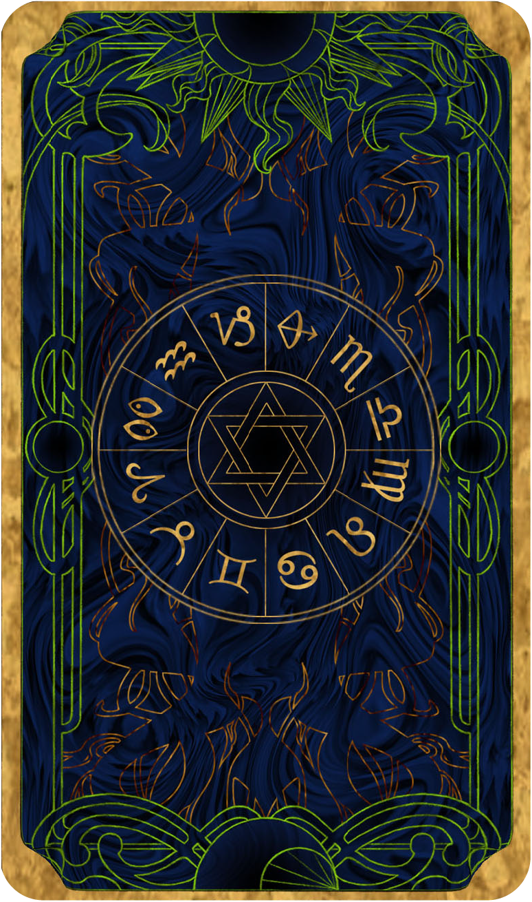

¿Cómo es mi signo?

 GEMINIS
GEMINIS
"La inteligencia es una de sus cualidades más conocidas y reconocidas, pero no sólo de mente, también a la hora de actuar. Suelen ser personas equilibradas, adaptables y muy entregadas al amor."